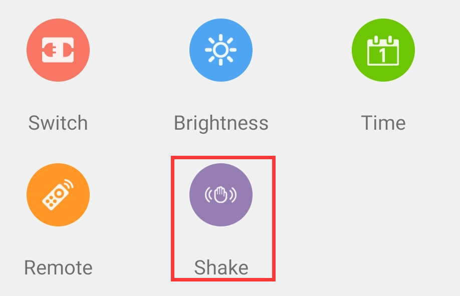
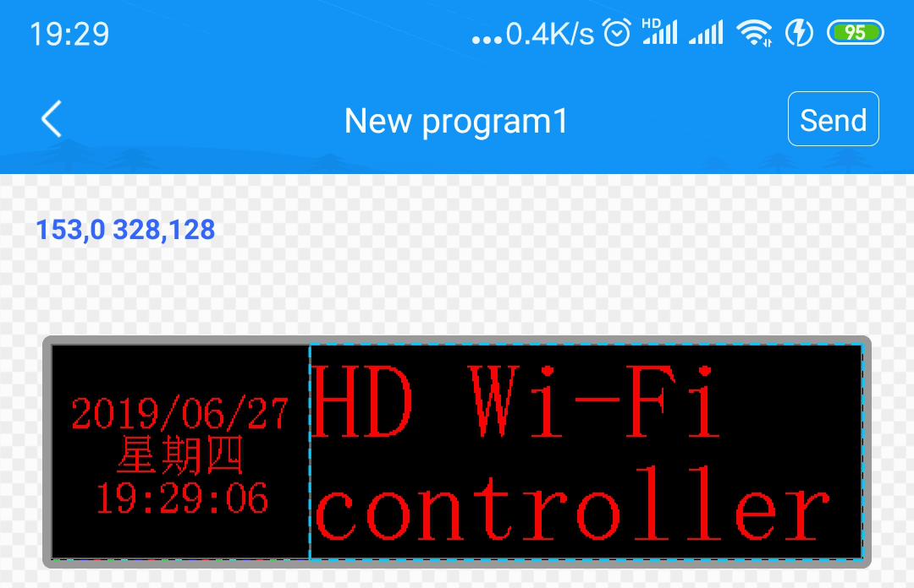

full color
single dual color
Connect the control card and modify the Wi-Fi password
1. Connect the control card:Open the “LedArt”, click the “Find device” button on the software interface or select the Wi-Fi hot spot corresponding to the control card in the phone settings to connect. The initial password is 88888888. After the connection is successful, the software interface displays the name of the control card.
2. Change Password:When using for the first time (connected with the initial password), you need to change the Wi-Fi password (8~16-digit alphanumeric combination) according to the software prompt and re-enter the new password connection.
New display
Click “New Display” on the program list interface, the APP will automatically read back the connected control card model and resolution, and click “OK” button to enter the display program editing.
Add program content
Click the“”icon in the lower right corner of the program editing interface to select content such as video, picture, text, animation word, clock, etc., and freely set display effects and area position.
Sending a program
Click the icon" "in the upper right corner and select "Send Program" to wait for the transmission to succeed.
"in the upper right corner and select "Send Program" to wait for the transmission to succeed.
shake to update the program
The shake function is a minimalist program update method. Click the “shake” icon in the device interface, select a picture or video, shake the phone to send the picture or video to the LED display.

In addition to updating the program, the mobile app “LedAr” can also set the LED display switch, brightness, time correction, remote control and control card selection.
Second, connect the control card and modify the Wi-Fi password
1. Connect the control card:Open “LedArt”, click the “Find Machine” button or select the Wi-Fi hot spot in the phone settings to connect it. The initial password is 88888888. After the connection is successful, the software interface displays the name of the control card.
2. Change password:When using for the first time (connected with initial password), you need to modify the Wi-Fi password (8~16-digit alphanumeric combination) according to the software prompt and re-enter the new password connection.
the new display
Click “New Display” in the program list interface, APP will automatically read back the connected control card model and resolution. Click “OK” button to enter the display and edit programs.
adding program content
Click the ”icon on the right side of the program editing interface to select text, clock, temperature and humidity, timing, etc., and you can freely set the display effect and area location.
”icon on the right side of the program editing interface to select text, clock, temperature and humidity, timing, etc., and you can freely set the display effect and area location.
sending programs
Click the "Send" button in the top right corner and wait for the delivery to succeed.

In addition to updating the program, the APP "LedArt" can also set the LED display switch, brightness, time correction, remote control, firmware upgrade and other functions.